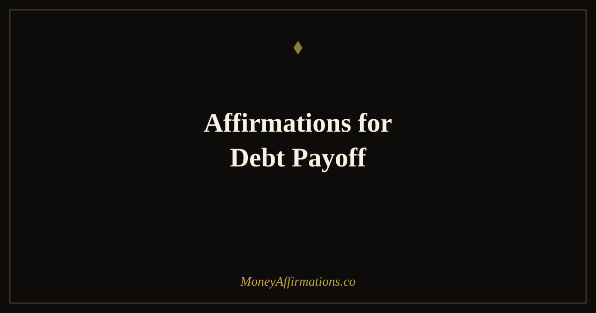

50 Affirmations for Debt Payoff to Stay Motivated on Your Journey to Zero

Of all the financial journeys a person can take, debt payoff may be the most emotionally taxing. The numbers move slowly. The sacrifices are immediate and tangible — fewer dinners out, a postponed holiday, a wardrobe that does not refresh. The payoff is invisible for a long time. And underneath all of it, for many people, sits a layer of shame that makes the whole subject hard to look at directly. This shame is not a reflection of poor character — it is the result of a culture that conflates financial struggle with personal failure. But shame leads to avoidance, and avoidance keeps the debt exactly where it is.
These 50 affirmations work alongside your debt payoff strategy — not instead of it. They address the emotional terrain that a spreadsheet cannot reach: the shame, the impatience, the fear, the identity work, and the quiet pride of a journey completed.
Debt payoff is one of the most emotionally charged financial journeys there is. The shame, the slow progress, the setbacks — they take a toll that a spreadsheet cannot fix. These affirmations work alongside your debt payoff strategy to keep your mind in the game when the numbers feel discouraging.
What are debt payoff affirmations?
Debt payoff affirmations are present-tense statements that support the psychological journey of becoming debt-free. Unlike general money affirmations, they are specifically crafted for the unique emotional challenges of paying down existing obligations: the shame of having debt, the frustration of slow progress, the temptation to give up when a setback occurs, the patience required to stay the course for months or years, and finally the identity shift that happens when the last balance reaches zero. They do not minimise the reality of the debt or promise magical results. They help you stay in the emotional state — clear-eyed, motivated, self-compassionate — from which consistent, effective payoff behaviour is possible.
50 affirmations for debt payoff
Acknowledging the debt without shame (1–10)
- My debt is a number on a page, not a verdict on my worth as a person.
- I can look at my financial situation clearly and without judgment.
- Many intelligent, capable people have carried debt — and paid it off.
- I release the shame I have carried about money and choose clarity instead.
- The choices that led to this debt were made by the best version of me available at the time.
- I am not defined by what I owe — I am defined by what I do next.
- I face my finances with honesty, courage, and self-compassion.
- Acknowledgment is the first step to freedom, and I have taken it.
- I am not broken — I am in the middle of a story that ends with financial freedom.
- I give myself permission to move forward without carrying unnecessary guilt.
Building the payoff plan with confidence (11–20)
- I have a clear plan and I trust myself to follow it consistently.
- I am capable of making smart, strategic decisions about my money.
- One step at a time is enough — I do not need to solve everything at once.
- I have the discipline and the creativity to find the extra money my plan needs.
- I approach my debt with strategy, not panic.
- Every good financial decision I make now is an act of love for my future self.
- I am a resourceful person who finds solutions where others see only problems.
- My plan is working, even when the results are not yet fully visible.
- I build momentum with every payment and every decision I make in my plan's favour.
- I am fully capable of becoming debt-free, and I am already on the path.
Making each payment — the ritual of progress (21–30)
- Every payment I make is a vote for the financial freedom I am building.
- This payment — however small — is a meaningful step forward.
- I make this payment with pride, not resignation.
- Each payment I send is proof that I am committed to the life I am creating.
- I celebrate every payment as a real act of progress and self-respect.
- This money, sent today, is working to set me free.
- I am consistent with my payments because consistency is how this gets done.
- I am actively reducing what I owe, right now, with every transfer I make.
- I trust the numbers — every payment brings the balance lower and me closer to zero.
- This payment is not a sacrifice — it is an investment in the version of me who carries nothing.
When progress feels painfully slow (31–40)
- Slow progress is still progress — I refuse to compare my pace to anyone else's.
- I trust the mathematics of consistent payment even when the balance seems stubborn.
- Every month I stay in the plan is a month closer to the finish line.
- Patience is a financial skill, and I am developing it with every passing month.
- The interest that once grew my debt is now shrinking it — the math is on my side.
- I measure my progress in percentage paid, not just dollars remaining.
- I have made it this far, and I will make it the rest of the way.
- Setbacks do not reset my progress — they are simply the texture of a long journey.
- I recommit to my plan after every stumble, without drama or self-punishment.
- I am exactly where I need to be on this journey, and I keep going.
Approaching the finish line — and celebrating zero (41–50)
- I am almost free — and I can feel the lightness that is coming.
- Every payment now brings me closer to the most satisfying balance I have ever seen: zero.
- I have done something extraordinary, and I deserve to feel proud.
- When I reach zero, I will carry the discipline and skills I built here into every financial decision ahead.
- I am becoming a person who is free from the weight of owing — and it feels remarkable.
- The money I was sending to debt will soon be mine to save, invest, and enjoy freely.
- I am arriving at financial freedom one payment at a time, and the end is in sight.
- I have stayed the course through difficulty and delay — that is something to be deeply proud of.
- I cross the finish line with a completely new relationship with money — healthier, wiser, freer.
- I am debt-free, and I build the rest of my financial life on this foundation of freedom.
How to use these affirmations
For maximum impact, match affirmations to your emotional state rather than reading the full list daily. When shame flares — when you avoid opening a statement or feel too embarrassed to talk about your finances — spend five minutes with the first group. Read each one slowly. Notice which ones land hardest and return to those. When you sit down to make a payment, read two or three from group three first. Make the payment feel like a ritual of progress rather than a defeat.
During plateau periods — weeks where the balance barely moves — lean on groups three and four. Writing one affirmation from group four on a card and placing it near your desk or mirror ensures that your finish line stays visible even when the timeline feels long. When you reach a milestone — 25% paid, 50% paid, a full debt eliminated — read the celebration group even if you are not yet done. Rehearsing that identity now makes it more real and more motivating. The day you reach zero, read the full final group aloud. You will have earned it.
The shame spiral of debt — and why emotional regulation speeds up payoff
Financial shame is one of the most reliably studied and most consistently damaging emotional states in personal finance. Research has found that individuals experiencing high levels of financial shame are significantly less likely to open their bank statements, less likely to make or follow a budget, less likely to seek professional advice, and more likely to make impulsive financial decisions as a form of emotional relief. The shame leads to avoidance, and the avoidance leads to exactly the conditions — rising interest, missed minimum payments, worsening balances — that reinforce the shame. It is a self-sustaining cycle.
The research on debt repayment strategies also reveals a striking psychological truth. Moty Amar and colleagues found that the mathematically suboptimal debt snowball strategy — paying off the smallest balances first — consistently outperformed the interest-rate-optimised avalanche strategy in real-world conditions. The reason was motivational: eliminating a balance entirely produced a psychological win that kept people in the plan. Emotional momentum, it turns out, is as important as mathematical efficiency when a journey takes years.
Perhaps most relevant is the research on financial identity. Studies show that people who describe themselves primarily as "someone in debt" — who allow the debt to become a core part of their self-concept — have slower payoff trajectories than those who frame themselves as "someone paying off debt" or "someone on the path to financial freedom." The identity, once established, shapes every daily decision: how carefully they review spending, how creatively they find extra money, how persistently they resist lifestyle inflation. Affirmations work directly at this identity level, shifting the internal narrative from debtor to freedom-builder long before the balance confirms it.
Tips to make them work faster
- Shame first: If you currently avoid looking at your balances, spend one week on group one alone before adding any other affirmations. Building the emotional safety to see your situation clearly is the prerequisite for everything else.
- Payment ritual: Make every payment a conscious act. Before you hit transfer, say one affirmation aloud. This small ritual converts a potentially painful moment into a moment of agency and pride.
- Track visually: A simple handwritten or printed chart showing your balance dropping month by month makes progress tangible. Pair the patience affirmations with a look at this chart when motivation dips.
- Milestone celebrations: Plan a small, free or low-cost celebration at each 25% milestone. Acknowledge the progress aloud to someone you trust. The act of being witnessed in your progress reinforces the identity shift.
- Separate worth from balance: If you notice yourself feeling better or worse about yourself based on the current balance, return to group one. Your worth is constant. The balance is just a number that is going down.
Frequently asked questions
Can affirmations help even when the debt feels overwhelming?
Yes — especially then. When debt feels overwhelming, the temptation is to avoid looking at it, stop making a plan, and fall into a pattern of minimum payments and financial paralysis. Affirmations interrupt that cycle not by pretending the debt is not real, but by changing your relationship with it. They help you move from shame and avoidance into clarity and agency, which is the emotional state from which real progress is made. Start with the shame-release group and use them every day until looking at your numbers no longer triggers an avoidance response.
Should I use the debt snowball or avalanche method alongside these affirmations?
Both methods work — the right one is the one you will stick with. Research by Moty Amar and colleagues found that the debt snowball (paying smallest balances first for psychological wins) often produces better real-world results than the mathematically optimal avalanche method (highest interest first), because motivation and momentum matter as much as the numbers. The affirmations in the progress group are especially well suited to the snowball approach, reinforcing each payment as a meaningful victory. If you choose the avalanche method, the patience affirmations in group four will help you stay the course when the large balances seem to move slowly.
How do I stay motivated when it will take years to pay off?
Long-haul motivation requires a different strategy than short-term motivation. It is built on identity — becoming the kind of person who is on a debt-free path — rather than the emotional high of visible progress. The affirmations in group four address this directly: they reinforce patience, trust in compounding, and the identity of a person who finishes what they start. Alongside affirmations, track percentage paid rather than absolute amount remaining (watching 45% become 47% feels different than watching a large number barely move), celebrate monthly milestones, and connect each payment to a specific vision of your debt-free life.
Debt payoff is ultimately one of the most powerful acts of wealth-building you can undertake. Every balance you eliminate frees cash flow that can be redirected toward building the financial future you deserve. Explore the wealth affirmations collection for affirmations that will carry you from debt-free into genuine financial growth — and visit the companion post on financial freedom affirmations to begin envisioning the life that awaits you on the other side of zero.